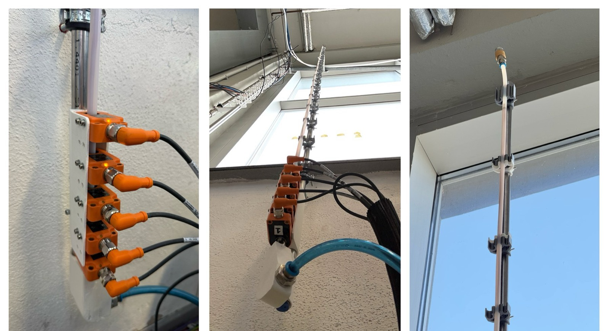

← All projects

Wire Floating Experiment (WFE)
FAU – Institute FAPS | 2025 – 2026 | Graduate research assistant, Master's thesis
Closed-loop wire levitation test rig

What?
- Vertical test rig in which an upward airflow holds a wire in floating equilibrium – the basic case of every lifting section in pneumatic wire transport.
How?
- Designed launching station, tube and sensor holders (Siemens NX, 3D printing).
- Control cabinet: S7-1500 software PLC, ET 200SP, IO-Link, Festo proportional pressure regulator and flow sensor.
- PID control of the inlet pressure from 5 inductive sensors; HMI for automated test runs.
Results
- Reproducible floating tests for wires of 0.5–3.5 m and 0.5–6 mm2.
- Dataset for the Master's thesis: CFD validation and machine-learning prediction of floating conditions.